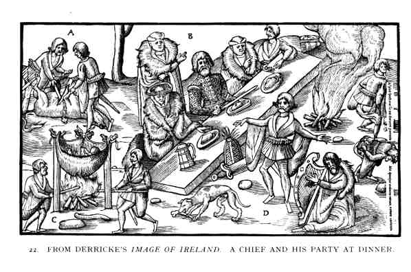
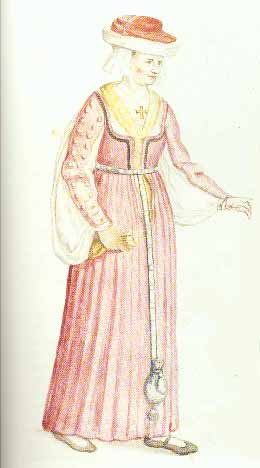
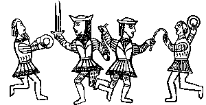
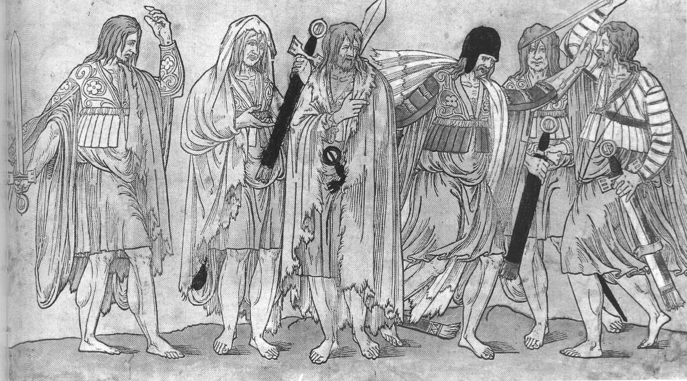
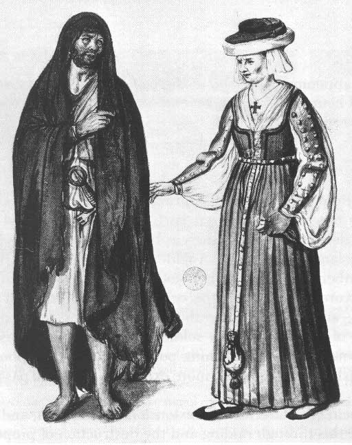
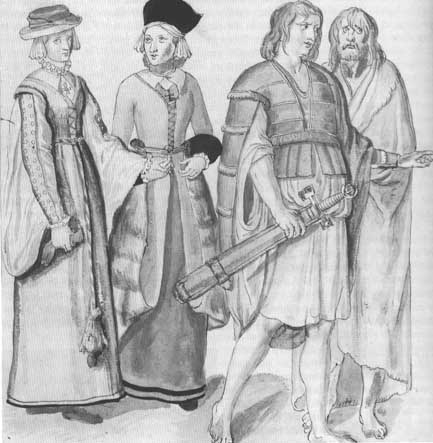

Late Medieval Ireland
(Late 15th -early 16th c.)
- Home
- Hallstat and La Téne Celts
- Ireland, 5th - 10th c. AD
-- Hair, Jewelry, etc. (Classical Celts and pre-medieval Ireland) - Late Medieval Ireland
- Medieval Scotland, 1100-1600
- Scotland, 1600-1800
-- Assembling a Basic 18th c. Woman's Outfit - Dyes
- Fiber Working Techniques
- Celtic Costume Myths and Tips
- Patterns and Resources
- Bibliography
- Recommended Reading
- Other links
The historical costuming list has had a lot of discussion over the years about the construction of the late-period Irish leine. The general consensus is that the sleeve is neither pleated nor has a drawstring along the top -- it's shaped more like the long sleeve of a Japanese kimono, but more rounded at the lower end. The practice of either sewing in pleats or a drawstring comes from an attempt a few decades ago to figure out how to incorporate 6 or more yards of material into the leine. However, given that the material used was probably only about 30 inches wide -- well, that makes a big difference in construction. You could easily use two yards of 30" wide fabric in each sleeve, and another three to four yards in the body of the garment, and not have an overwhelmingly large garment. Moreover, only the very wealthy would have been able to afford lots and lots of extra fabric in their leine. See the last illustration on this page for a good look at the sleeve of a poor man's leine -- it clearly isn't as full as some of the other sleeves on this page, and is shoved up a bit at the elbow. Also, some of the drawings of leinte don't show a large sleeve -- the Durer drawing, for example, and the dancing figures from the whalebone book cover. So it's likely that sleeve length and fullness could have varied from region to region, and most certainly did from one century to another, being narrow in the early middle ages and becoming the large 'bag sleeve' later on, possibly due to the influence of fashion from other areas (puffy sleeves and large, flowing houppelande sleeves from the continent, for example).
I don't currently have the time to expand on this page, but hope to do so in the future. In the meantime, please see the following web sites:
Reconstructing History -- Kass
McGann, their historian, has done research in Ireland on clothing in this period.
Some Clothing of
the Middle Ages - Tunics - The Moy Dress
Early
Medieval Irish Clothing and Shoes
The Leine
Some images:

 |
'City' woman from Dublin, mid-late 16th c., by de Heere -- note the features common to other European costume at this time: the laced front bodice, probably boned along the edge or worn over some kind of stiffening bodice (note that the front of the bodice is not puckered by the lacing, which indicates some kind of stiffening layer); the belt looks like medieval belts from elsewhere in Europe. Note how similar her headgear looks to that of the chief's wife in the Derricke print (above). |
 |
Dancing figures on a whalebone book cover from County Dublin, late 16th century. Note that they don't have 'bag sleeves', and that they're probably wearing trews or knee-breeches. |
 |
Kerns (ceatharnaigh), or professional foot-soldiers, from Gaelic Ireland, ca. 1540 |
 |
Below: a 'civil' Irish woman (i.e., from within the Pale), with a Gaelic Irishman, as drawn by Lucas de Heere, ca. 1575, based on early 15th c. illustrations. |
 |
Another illustration of Irish clothing, again showing women from the Pale (i.e., English-controlled Dublin), along with Gaelic Irish men. |